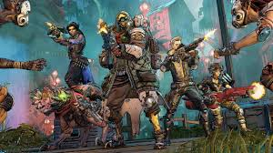

Borderlands 3 es un título de la saga Borderlands. Se estrenó el 13 de septiembre de 2019 para las plataformas PlayStation 4, Xbox One y Microsoft Windows (Epic Games Store) y el 30 de octubre de ese mismo año para macOS. Durante la E3 2019, se anunció que también formaría parte del catálogo de Google Stadia, lanzándose oficialmente el 17 de diciembre de ese mismo año. En la PAX East 2020 se anunció que estaría disponible en Steam a partir del día 13 de marzo, día en que se estrenó oficialmente para esa plataforma.
Siete años después de la muerte de Jack el Guapo y la caída de Hyperion, los antagonistas del videojuego Troy y Tyreen Calypso se enteran de otras Cámaras más allá del planeta Pandora, y forman un culto violento llamado "Hijos de la cámara" para tomar posesión de ellos. Lilith, un personaje que hace aparición en los anteriores juegos de la saga, recluta a nuevos "busca camaras" para ayudar a detener a los gemelos Calypso. Muchos personajes de juegos anteriores de Borderlands regresarán, incluidos los del videojuego derivado Tales from the Borderlands.
